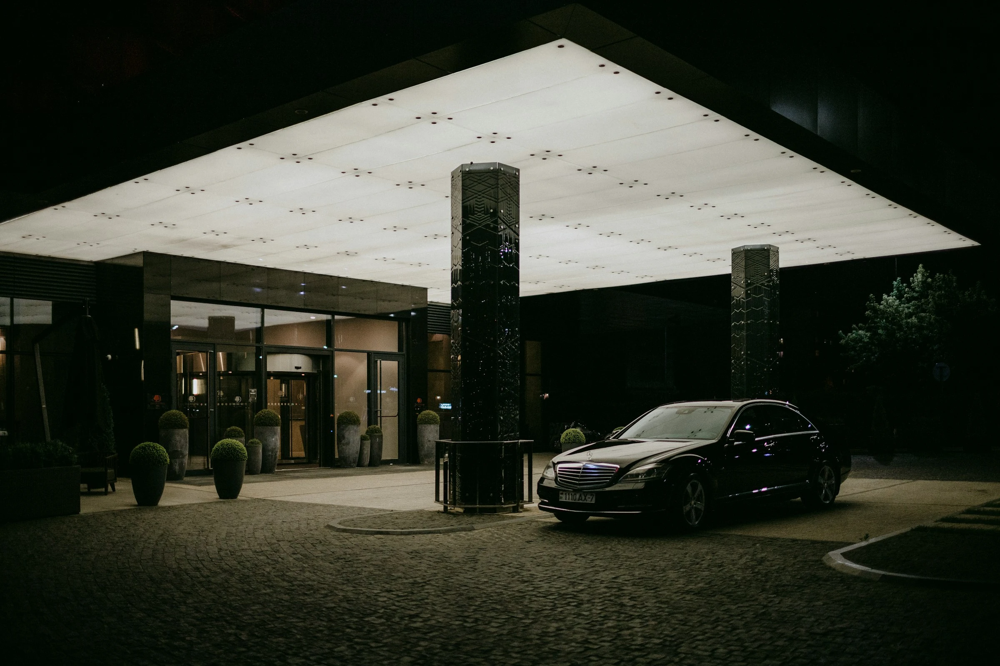
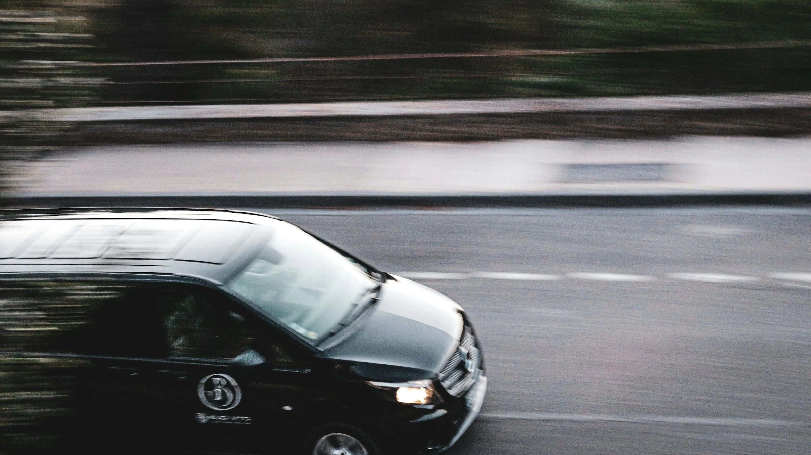
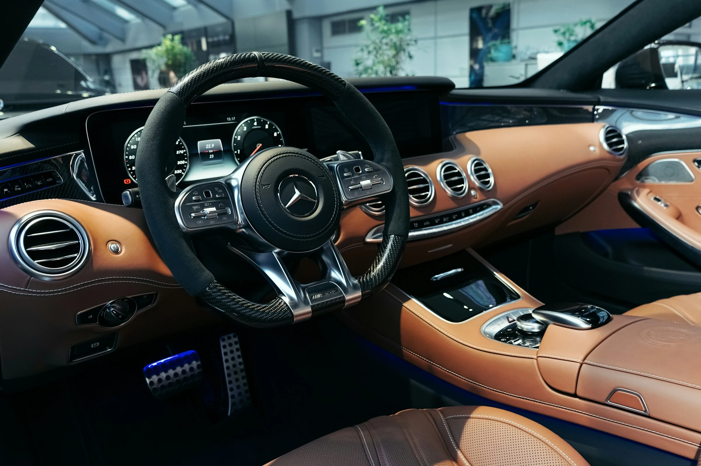
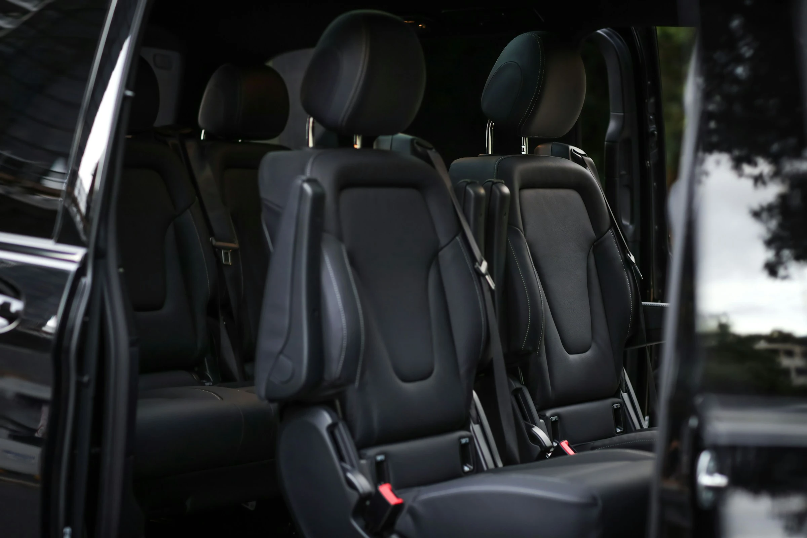
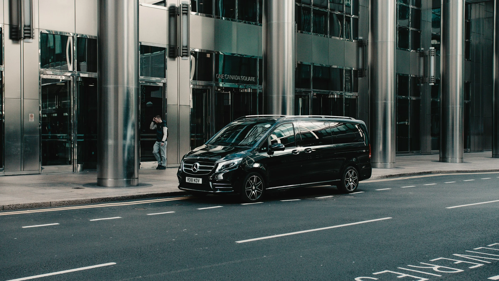

Dolasci sa aerodroma
Početak organizacije od potvrđenog dolaska gosta.

POSLOVNI PREVOZ · KONFERENCIJE I KONGRESI
Prevoz organizovan prema rasporedu događaja — za organizatore, govornike, rukovodioce, goste i grupe, od dolaska na aerodrom preko hotela do lokacija programa.
Pregled usluge
Konferencija ne počinje na vratima sale niti se završava poslednjim predavanjem. Prevoz povezuje kretanja koja se dešavaju oko programa.
Početak organizacije od potvrđenog dolaska gosta.
Ključne tačke programa povezane u jednu transportnu celinu.
Odvojena kretanja i zajednički prevoz grupa u istoj organizaciji.
Više uloga vozila unutar istog potvrđenog rasporeda.
Kome je namenjeno
Različiti učesnici nemaju uvek isti raspored, istu tačku preuzimanja ni isti način kretanja.
Jedna struktura za dolaske, hotele, program i grupe.
Kretanja usklađena sa njihovim delom programa.
Individualna poslovna kretanja unutar događaja.
Profesionalan prevoz između potvrđenih tačaka.
Učesnici koji treba da ostanu zajedno tokom transfera.
Raspored kretanja
Primer organizacije, ne fiksna ruta. Konačan raspored nastaje iz podataka za konkretan događaj.
Primer organizacije kretanja
Potvrđeno preuzimanje.
Jedna od ključnih tačaka programa.
Potvrđena lokacija događaja.
Sledeća organizovana tačka.
Kada je deo potvrđenog rasporeda.
Poslednje potvrđeno kretanje.

Putnici i grupe
Individualni i grupni prevoz rešavaju različite potrebe unutar iste organizacije.
Za govornike, rukovodioce i pojedinačne goste sa odvojenim kretanjem.
S KLASA · E KLASA

Za organizatore, timove i grupe učesnika koji treba da putuju zajedno.
V KLASA · SPRINTER

Više vozila
Različite uloge vozila ostaju deo iste transportne organizacije.
S klasa · E klasa
V klasa
Sprinter
Preporučena vozila
Individualni izvršni putnik.
Individualna poslovna kretanja.
Manja grupa.
Veća poslovna grupa.
Standard usluge
Shared ServiceStandards — 4 grupe × 3 kanonske činjenice.
Česta pitanja
Editorial answer.
Canonical token answer.
Canonical token answer.
Canonical token answer.
Canonical token answer.
Editorial answer.
Quote-only token answer.
Canonical token answer.
Manual-confirmation token answer.
Datum, ključne lokacije, broj putnika, struktura grupa i osnovni raspored događaja.
